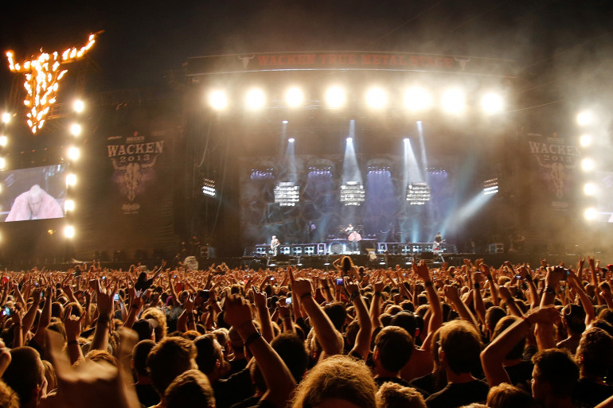
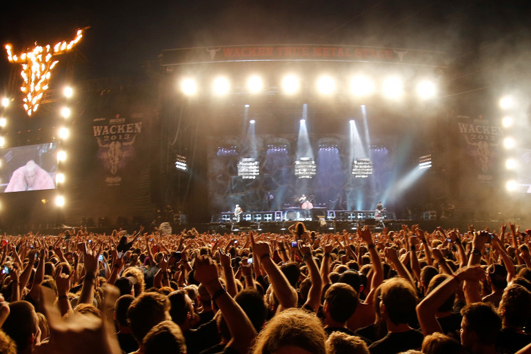

Le métal, ou heavy metal, est un genre musical qui a émergé à la fin des années 1960 et au début des années 1970, principalement au Royaume-Uni et aux États-Unis. Il puise ses racines dans le blues rock, le hard rock et le psychedelic rock. Voici les grandes étapes de son évolution :
Le heavy metal émerge avec des groupes comme Black Sabbath, Led Zeppelin, et Deep Purple, qui jouent une musique plus lourde et agressive, souvent marquée par des riffs puissants de guitare, des percussions intenses, et des thèmes lyriques sombres.
Dans les années 1970, des sous-genres commencent à apparaître. Les groupes de cette époque incluent :
Les années 1980 voient une prolifération de styles au sein du métal :
Dans les années 1990, le métal continue de se diversifier :
Aujourd'hui, le métal est un genre mondial avec une immense diversité stylistique et une communauté dédiée.
 

Le hard rock est souvent considéré comme le prédécesseur direct du heavy metal. Il se caractérise par des riffs de guitare puissants, une voix énergique et des rythmes dynamiques. Voici les grandes étapes de son évolution :
Le hard rock naît du blues rock et du rock psychédélique :
Dans les années 1970, des groupes comme Led Zeppelin et Deep Purple deviennent des piliers, mêlant puissance et mélodie :
Le hard rock devient plus agressif, et des groupes comme Van Halen et Kiss repoussent les limites du genre, ouvrant la voie au heavy metal.
Dans les années 1980, le hard rock se mêle au glam rock, donnant naissance à des groupes comme Bon Jovi et Guns N' Roses.
En résumé, le hard rock et le métal sont étroitement liés. Le premier a ouvert la voie au second, et chacun a évolué tout en influençant l'autre.